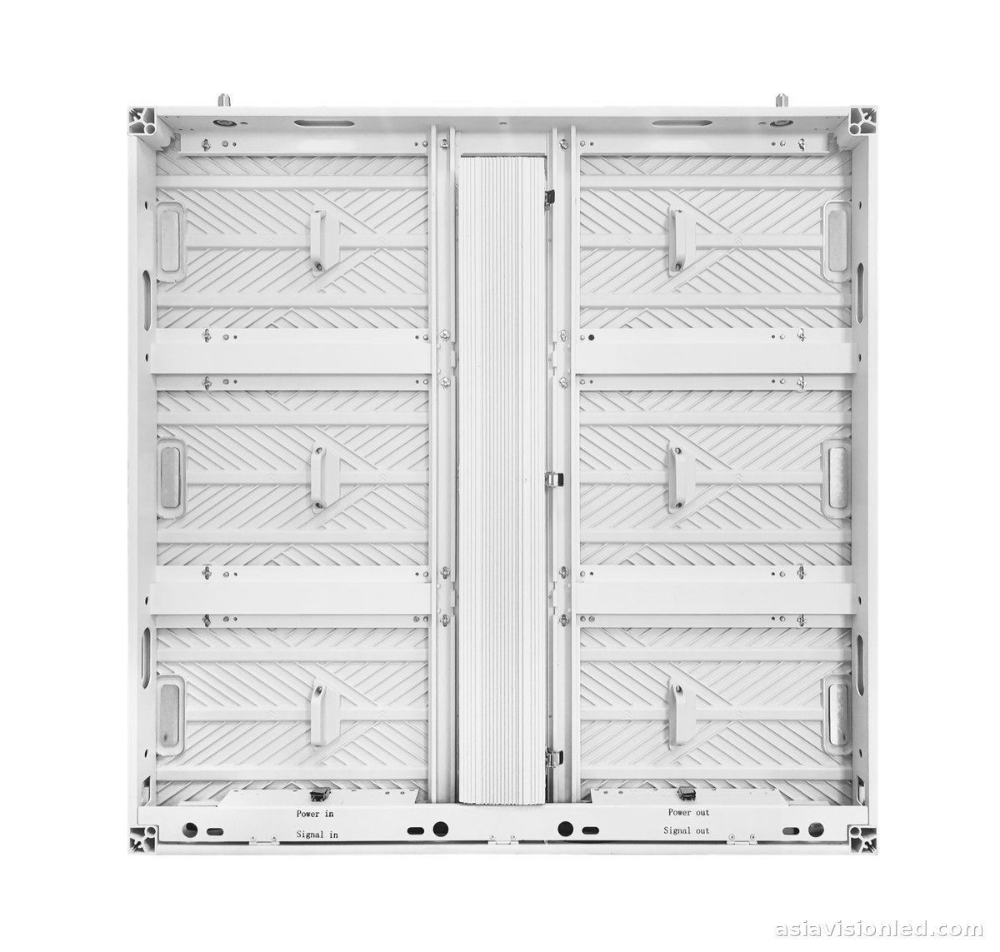
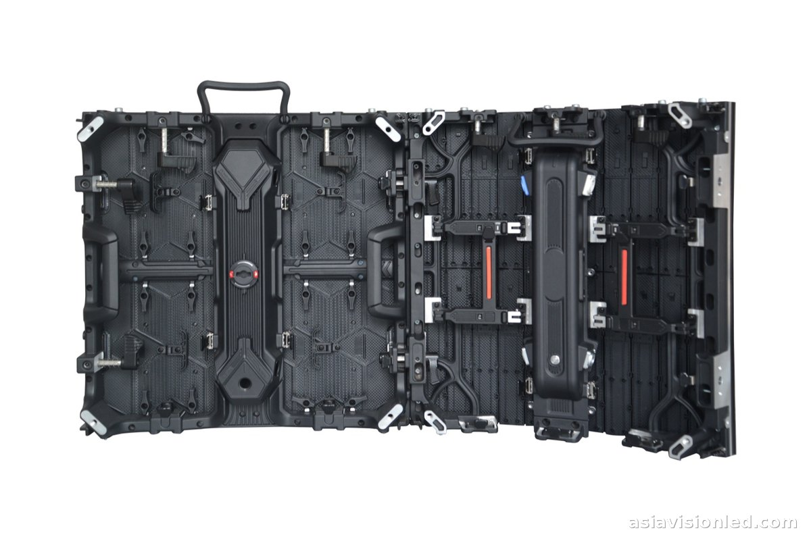
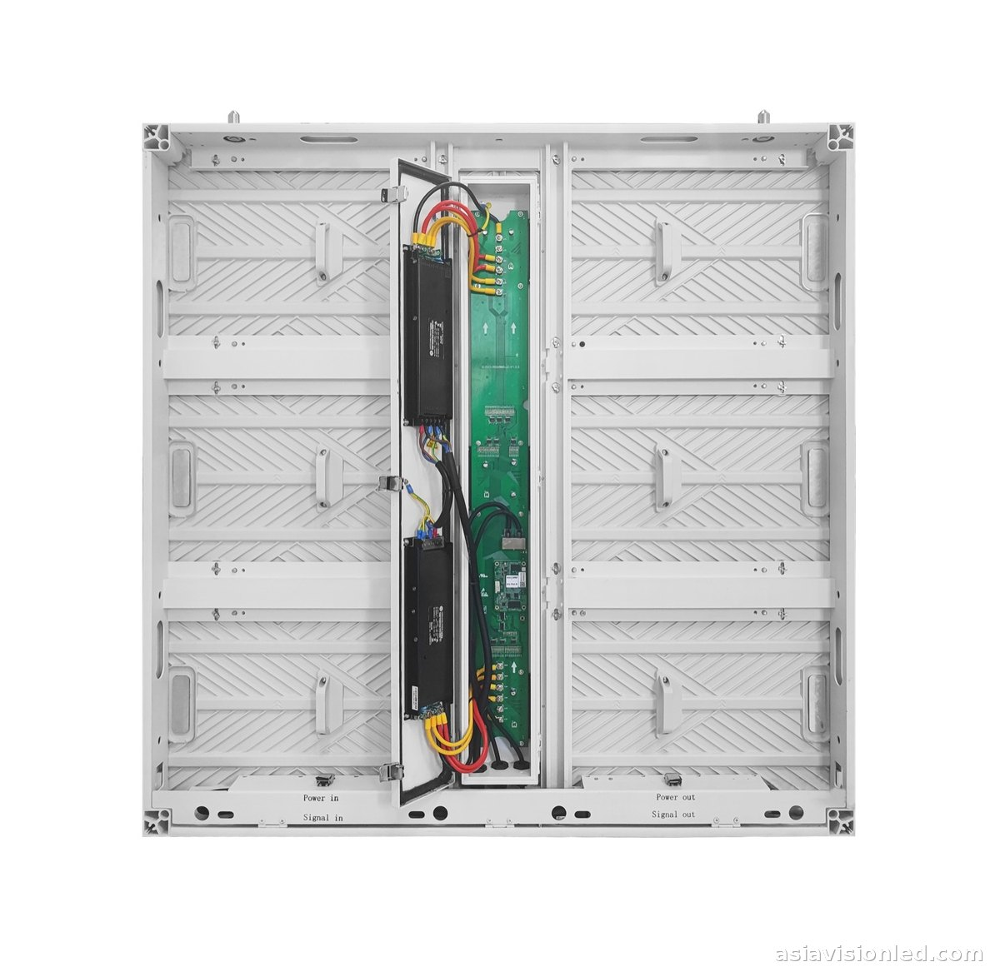
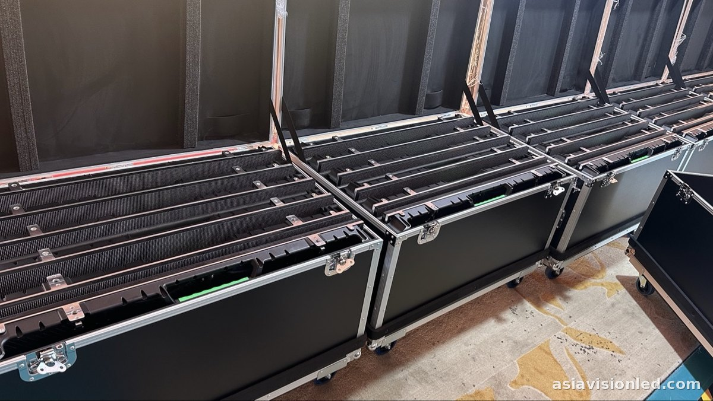

By Danny · 2026-11-17
Rain is the failure people photograph. Condensation is the failure that starts inside a cabinet that still looks sealed. In a humid climate the air can hold a large amount of water vapour. When a cabinet cools at night, or when warm wet air meets a cooler board or a metal back, that vapour can drop below the dew point and become liquid on electronics that never saw a direct leak. An IP rating, a working-temperature line and a 95% relative-humidity figure on a datasheet do not, by themselves, mean the wall is safe from that process.
This guide is for buyers and operators specifying outdoor LED walls in monsoon, tropical, subtropical and other high-humidity sites. It is about warm, wet air and temperature cycling, not about freezing, ice or snow, and not about salt as a separate corrosive load. For those, use the existing IP rating guide, the C5 and salt-spray guide, and the lightning and surge guide. Heat rejection in general is covered in the cooling and ventilation guide.
Liquid water arriving from outside is an ingress problem: joints, locks, glands, drains and the quality of the last service visit. Salt is a corrosion problem that continues after the water has dried, and it is specified with coatings, hardware and test methods that an IP code does not replace. Humidity is a vapour problem. Vapour can enter as air that the enclosure exchanges when it breathes with temperature, can be sealed in at assembly, or can be carried in on packing and on a cabinet that was opened on a wet day. Once inside, it condenses when a surface is at or below the local dew point.
Relative humidity alone is a poor shorthand, because it moves with temperature. Night-time cooling can push an already moist cabinet across the dew point even if no rain fell. A wall that is powered down for days in a rainy season often stays colder and wetter than a wall that runs and makes its own heat. Those are operating facts, not a reason to invent a duty cycle that a product page has not published.

An IP code, defined in IEC 60529, reports how an enclosure performed in stated dust and water tests. It is useful. It is also easy to over-read. The test does not automatically represent years of thermal cycling, a half-seated rear door, a missing gland, a blocked drain, or water travelling along a cable into a connector. A cabinet that left the factory as IP65 can fail as an open box if the last technician did not close it as it was designed.
After any rear service, the doors, module locks and cable entries have to sit evenly. Figure 1 shows the rear doors on a D-PRO outdoor cabinet; that is the plane where a gasket either works or does not. The IP rating guide is the right place for how to read the code. This article only insists that condensation planning starts after the code, not instead of it.

Several Asia Vision outdoor specification PDFs publish the same style of environmental line, and it should be quoted as a datasheet range, not as a condensation guarantee.
av-d-pro-v2.0.pdf) lists protection level IP65, a working range of −20 °C to +50 °C at 10–95% RH, and a storage range of −40 °C to +70 °C at 10–95% RH.av-eh-pro-cob-v1.0.pdf) lists protection level IP65 and the same working and storage temperature and humidity ranges. The product page also states IP65.av-ef-outdoor-fixed-cob-v1.0.pdf) states front and rear protection class IP65, and the same working range of −20 °C to +50 °C, 10–95% RH, and storage of −40 °C to +70 °C, 10–95% RH.av-s-outdoor-v2.1.pdf) lists protection level IP65 and the same working and storage ranges.Those figures are what the documents say. Two cautions follow. First, a 95% RH working line describes a humidity range in which the manufacturer rates the product; it does not mean condensate will never form on a board when the cabinet cools. Second, this article does not add brightness, power or lifetime numbers from those PDFs, and it does not claim a tropical or monsoon test that has not been published. If a project needs a salt-spray, damp-heat or condensation test report, ask for the report by method, laboratory and model, or treat it as absent.

When you compare outdoor cabinets for a humid site, look past the IP line to the details that decide whether vapour and water have a path, and whether electronics are prepared if they do.
Ask how the rear compartment is gasketed and how cable glands are specified. Ask where the cabinet drains, and whether the drain can be inspected and kept clear. Ask whether power and receiving-card boards have a documented conformal coating, and whether that coating is complete or only on some assemblies. Ask whether the design uses a pressure-equalising breather, a desiccant provision, or an anti-condensation heater, and under what conditions those options are offered. Enclosure practice in other industries often holds internal air a few degrees above ambient, or uses a hygrostat, to stay above the dew point; whether a given LED cabinet includes that hardware is a product question, not a general rule this article can assign to every Asia Vision series.
Figure 3 shows an open D-PRO power compartment. That is the space where a poor gland or an uncoated board is exposed if humid air is trapped and then cooled. Do not assume a COB face, which has no SMT placement step and a sealed front, automatically protects the rear electronics. Front and rear are specified separately for a reason, as the EF PDF’s “front and rear IP65” wording already hints.

A humid-climate project can be lost in the warehouse or in the crate. Cabinets packed in a cold, dry plant and opened in warm, wet air will sweat. The packaging standard guide already covers moisture barriers and desiccant as packing topics. On site, allow time for acclimatisation in a controlled space before you power a wall that has just come out of a container or a long truck journey. Do not leave flight cases standing open in rain. Do not store spares in an unconditioned shed and then expect them to match the installed wall after a wet season.
If the project includes a long idle period before opening day, say so in the order. A wall that sits cold and unpowered in a monsoon is a different duty from a wall that runs every night. Ask the supplier what they recommend for that interval; this article does not invent a mandatory daily heat cycle as an Asia Vision rule.
Build a short seasonal checklist rather than waiting for a dark module. Before the wet season, inspect gaskets, latches, glands, drains and any obvious corrosion or mould. After heavy rain or a storm, look for water marks, fogging, connector discolouration and alarms before you apply power to a cabinet you suspect is wet. Photograph repeat points so slow change is visible. The preventive maintenance guide is the place for the wider service plan; humidity simply makes the enclosure items on that plan non-negotiable.
Surge and lightning remain a parallel risk in many of the same climates. Specify them separately through the surge protection guide rather than hoping a dry cabinet is also a well-earthed one.
Give bidders the climate, not only a city name: typical day and night temperatures, a dew-point or humidity range if you have it, whether the site is coastal, how often the wall will be powered, and whether it will sit idle through a rainy season. Then ask for:
Choose the series after those answers, not from the IP headline alone. Indoor versus outdoor selection in general is covered in the indoor vs outdoor guide; this article is the humid-outdoor supplement.
Send the city or climate, whether the site is coastal, the duty cycle and the series you are considering. We will tell you what is in the published specification and what must be confirmed. Email info@asiavisionled.com or message us on WhatsApp at +86 172 7666 5558.
Request an Outdoor Humidity ReviewChat on WhatsApp